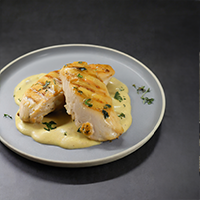

Chicken Breast with Tarragon-Mustard Sauce

This is a quick cooking chicken breast with a creamy pan sauce. Use more or less mustard to taste and depending on the strength of the dijon mustard.
Ingredients
- 4 Boneless, skinless Chicken Breasts, trimmed
- 1/4 Teaspoon Salt, plus more to season chicken breasts
- Ground Black Pepper
- 1/2 Cup All Purpose Flour
- 3 Tablespoons Butter
- 2 Shallots, sliced thin
- 3 Garlic Cloves, minced
- 3/4 Cup Heavy Cream
- 3 Tablespoons Dijon Mustard
- 2 Tablespoons Fresh Tarragon, chopped
Instructions
- Gently pound the chicken breasts to 3/4 inch thickness between 2 pieces of plastic wrap. Lightly season chicken on both sides with salt and pepper. Place flour in a shallow dish and dredge each piece of chicken one at a time in the flour and place on a plate.
- Melt 2 tablespoons butter in a 12 inch non-stick skillet over medium heat. Add chicken and cook until lightly browned, 4-6 minutes per side. Return chicken to plate.
- Add shallots, garlic, 1/4 teaspoon salt, 1 tablespoon butter to the now empty skillet and cook until the shallots are soft, about 3 minutes. Stir in the cream and return the chicken to the skillet.
- Reduce heat to medium-low. Cover and cook until the chicken registers 160°F, about 5-8 minutes. Whisk the 2 Tablespoons mustard and tarragon into the cream sauce. Season with salt, pepper, and addional mustard to taste. Spoon sauce over chicken and serve.